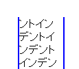

印刷時には改ページされた直後の行（各ページの先頭行）が、ボックス内の最初の行でない場合でもtext-indentプロパティの指定に従ってインデントされる。
<p style="text-indent:2em; width:4em; border:2px solid blue;">インデント……</p>
検証ページには上の記述があります。検証ページを開き、印刷プレビュー画面に切り替えて、2ページ目の先頭がインデントされているかを確認してください。
印刷プレビューで見た2ページ目の先頭部分です。
Opera6.05での表示
WinIE6.0での表示
WinIE6.0では標準・互換モードの両方で不具合の発生が確認されました。